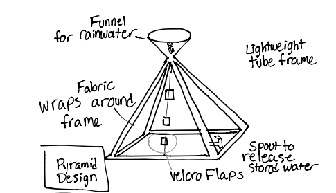
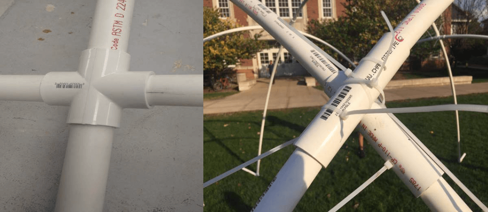
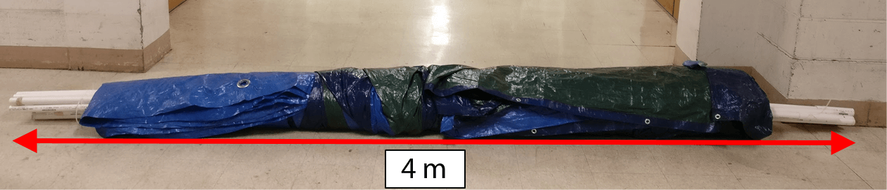

Cameron Alberg
Disaster Relief Shelter
· Outstanding Acheivement Award for Excellence in Engineering Design ·
A lightweight, compact and inexpensive shelter solution for disaster relief efforts in developing countries. The shelter can be assembled without tools, and includes a rainwater collection and filtration mechanism.
Cameron Alberg, Nicole Allegretti, Audrey Chou, Emily Weerakkody
My Role: Developed concept, designed staking mechanism, designed water filtration mechanism, conducted stress tests using finite-element analysis
Skills: Mechanical Design | Fluid Systems Design | Finite-Element Analysis
Final prototype
Cube design concept sketch
Pyramid design concept sketch
Why
Can we design a lighter and cheaper relief shelter, and also provide users with the resources to be more self-sufficient?
Natural disasters have displaced 26.4 million people each year since 2008. Many of these people require some form of temporary shelter that can be distributed and constructed efficiently and provide necessary protection from the elements. Current shelters are often heavy, expensive, and inefficientlysized, all factors that can result in fewer shelters being provided during recovery efforts. Many of these relief shelters also fail to provide any other additional resources, such as potable water. This results in added costs to recovery efforts, due to the expense of providing bottled water on a regular basis.
Process
After coming up with several concepts, we used design matrices to evaluate the optimal geometries for the shelter. Considering factors such as livability, strength and weight, a dome shape proved to be the most suitable for our design.
Our first prototype was constructed out of 1” diameter PVC. We didn’t have access to equipment that would allow us to test the maximum roof/wind loading we needed to withstand, so we designed a CAD model to stress test using finite-element analysis simulations. We also conducted point loading experiments on our actual prototype, to validate the model we created.
The joint design for the structure was improved upon through several iterations. Initially, standard store-bought 90° crosses were thought to be sufficient to connect the arches of the structure. However, many of the junctions did not naturally tend towards 90° angles. Instead a different design was implemented that allowed for a different angle of juncture and could adequately withstand the bending caused by loads applying to the top and sides of the structure. The improved joints use zip ties to connect as they are lightweight, inexpensive, and can withstand the maximum stresses exerted on the joints.
We designed the water collection mechanism to hold 20L in 4 separate collection bags using a four funnel system. Each funnel uses the tarp covering of the shelter to collect water and filter it through a series of meshes to remove any debris/sediment. Each system has a valve so that collection bags can be removed and used when needed. This system is not designed to replace bottled water, but to reduce the amount that relief organizations need to provide. If this mechanism was used in 6,000 shelters (the amount of shelters we could provide based on past relief budgets and the cost of our shelter), $7.4 million could be saved in bottled water costs.
To make it easy for 2 people to carry from a drop-off point,the entire shelter is able to be packaged into a cylinder 4 m long (0.3 m diameter).
Prototype of shelter frame
Original (left) and revised (right) joint design
Packaged size of final prototype
Roof loading experimental test
Roof loading deflection in finite-element model (Abaqus)
Design of water collection system
Water collection prototype with labeled components

Timelapse of complete assembly
Solution
The final prototype constructed is able to withstand the loading required by relief organizations. It can adequately accommodate 5 people, includes a practical water collection mechanism, and requires no tools to assemble. The projected of the shelter is $160, which is 60% cheaper than the current shelter used by relief organizations. Future iterations would include flaps or windows for ventilation and lighting, as well as a more secure seal between the tarp and water filtration system to improve durability.